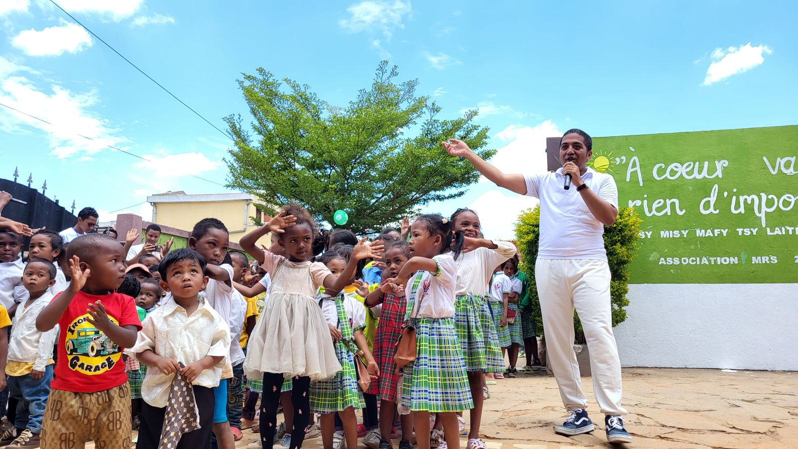
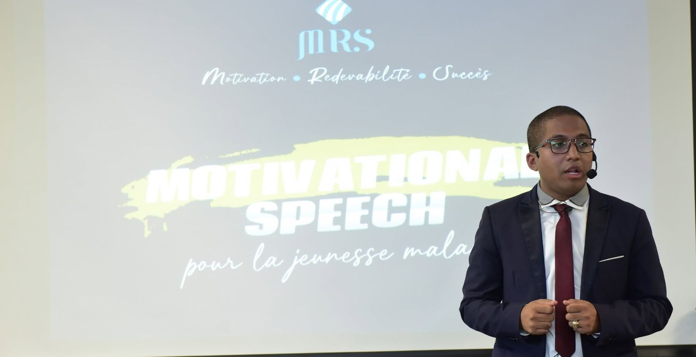
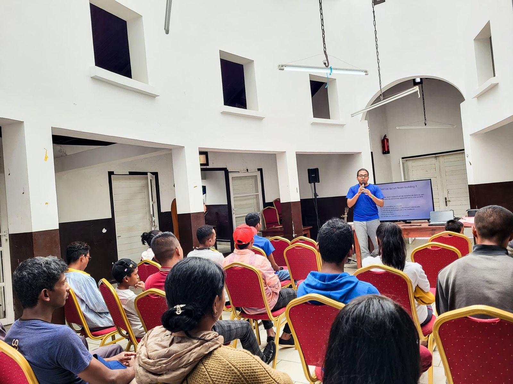
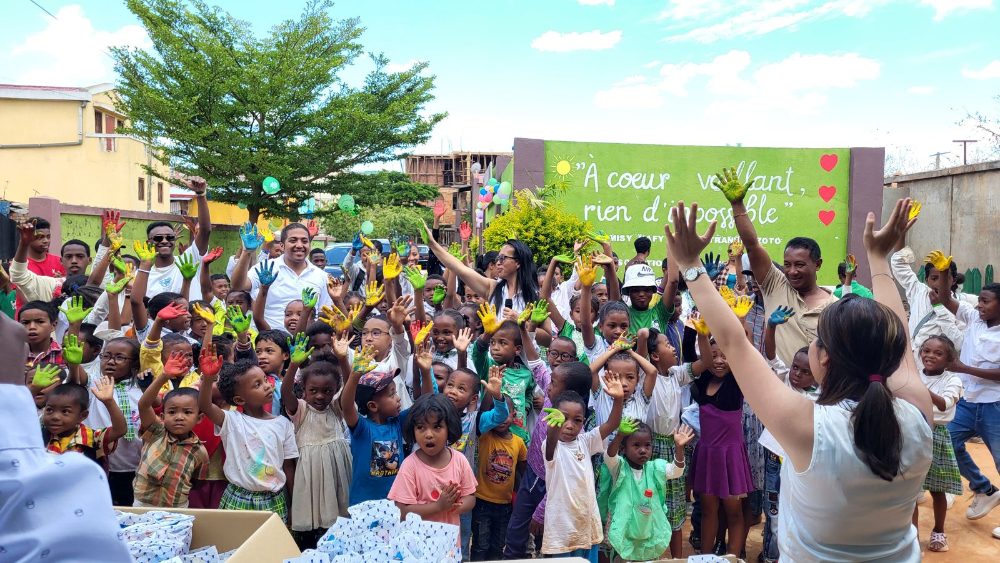
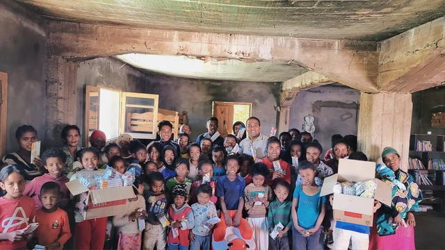
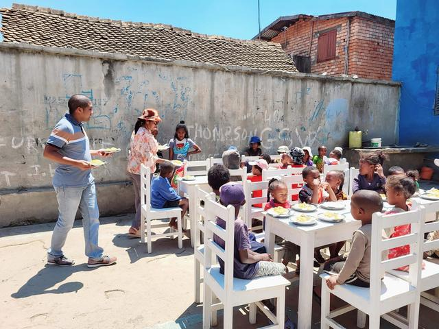
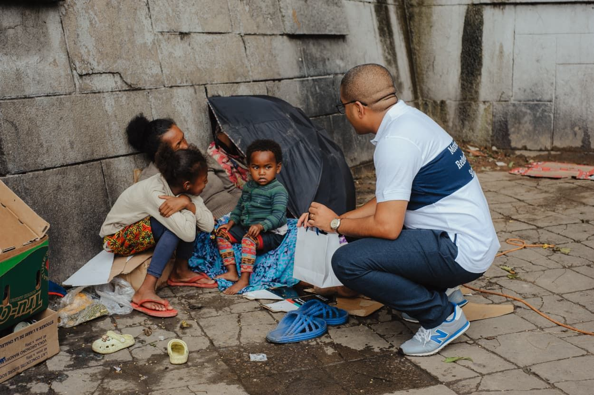

Motivation•Redevabilité•Succès
Inspirer la jeunesse malgache, agir pour Madagascar
L'association MRS relie les jeunes, la diaspora et les partenaires autour d'une conviction simple : chacun peut contribuer, selon ses moyens et son expérience, à faire émerger des solutions.

Motivational Speech, 3e édition à LyonSamedi 5 décembre 2026, salle Colovray à Pierre-Bénite. Entrée gratuite sur inscription.
Voir le programmeQui sommes-nous
Une association née d'un sentiment de redevabilité
Fondée par Michkaël Reilly Solofoniaina, l'association MRS s'adresse en priorité à la jeunesse, à Madagascar comme à l'étranger.
Elle agit sur deux terrains complémentaires. D'un côté, des conférences, débats et tables rondes sur la jeunesse, l'entrepreneuriat, le développement personnel et le partage d'expériences. De l'autre, des actions sociales et caritatives auprès d'enfants démunis, d'écoles et de centres d'accueil.
Son ambition : créer des espaces où la parole inspire, où les expériences deviennent des repères et où les rencontres ouvrent des possibilités concrètes.
Motivation
Encourager la confiance, l'initiative et la persévérance à partir de parcours réels.
Redevabilité
Reconnaître la responsabilité individuelle et collective envers les communautés et Madagascar.
Succès
Valoriser des réussites plurielles, les apprentissages et les progrès, plutôt qu'un modèle unique.

Le mot du Président fondateur
Je nous invite à passer des critiques aux actions, à parler avec sincérité, à partager nos expériences et à agir ensemble, même à petite échelle.
Michkaël Reilly SolofoniainaPrésident fondateur, Association MRS
Lire le mot du Président
Lorsque je suis rentré à Madagascar après mes études en France, à Lyon, j'ai retrouvé mon pays avec un regard différent. J'ai pris pleinement conscience des réalités auxquelles une grande partie de la jeunesse malgache est confrontée : des talents, des ambitions et des idées, mais aussi des obstacles qui peuvent freiner les parcours et décourager les initiatives. Cette expérience m'a marqué et m'a fait comprendre que l'opportunité reçue appelle une responsabilité.
C'est de ce sentiment de redevabilité qu'est née l'association MRS (Motivation, Redevabilité et Succès), puis Motivational Speech. Nous voulons créer un espace où la parole inspire, où les expériences deviennent des repères et où les rencontres ouvrent des possibilités concrètes. Notre ambition est de relier des jeunes, des personnes engagées et des partenaires autour d'une conviction simple : chacun peut contribuer, selon ses moyens et son expérience, à faire émerger des solutions.
À vous, jeunes de la diaspora, je veux dire que l'on peut contribuer à Madagascar depuis la France ou depuis ailleurs : par ses compétences, son réseau, son temps, ses idées ou un engagement durable. Les critiques peuvent exprimer une inquiétude légitime, mais elles ne suffisent pas à transformer les choses. Je nous invite à passer des critiques aux actions, à parler avec sincérité, à partager nos expériences et à agir ensemble, même à petite échelle.
Osons parler, partageons pour mieux agir.
Notre événement signature
Motivational Speech
Un rendez-vous de mobilisation, de partage d'expériences et de mise en réseau pour inciter les jeunes, à Madagascar et dans la diaspora, à investir à Madagascar, pour Madagascar.
Chaque édition réunit une conférence portée par le président fondateur, des témoignages de personnes aux parcours inspirants, un temps d'échange avec le public et des moments de rencontre. L'inspiration y est toujours reliée à des pistes concrètes : contacts, orientation, engagement.
Motivational Speech pour la jeunesse malagasy, avec l'intervention de leaders de différents secteurs.
Table ronde « La Jeunesse, l'Avenir et Conseils » à l'Alliance française de Sainte-Marie.
Motivational Speech, 3e édition, à Lyon. Programme et inscription


Sur le terrain
Nos actions sociales
La redevabilité se vit aussi au plus près de celles et ceux qui en ont besoin.
Avec une équipe de bénévoles, l'association mène des actions caritatives tout au long de l'année :
- visites et fêtes dans des écoles et des centres d'accueil d'enfants ;
- repas partagés et distributions de colis auprès d'enfants des rues ;
- dons de fournitures, de jouets et de matériel ;
- rencontres et soutien auprès d'acteurs locaux, comme les sapeurs-pompiers.




Rejoindre le mouvement
Nous soutenir
Votre temps, vos compétences ou votre contribution financière rendent possibles nos événements gratuits et nos actions sociales.
Faire un don
Chaque don, même modeste, finance directement des colis, des fournitures et la gratuité de nos événements.
Devenir bénévole
Accueil, logistique, communication, animation : rejoignez l'équipe à Madagascar ou en France.
Proposer mon aide
Devenir partenaire
Entreprises, institutions, associations : soutenez Motivational Speech Lyon 2026 en financement, en matériel ou en nature, avec une visibilité adaptée.
Écrivez-nous
Contact
Une question, une idée de partenariat, une envie de vous engager ? Nous lisons chaque message.